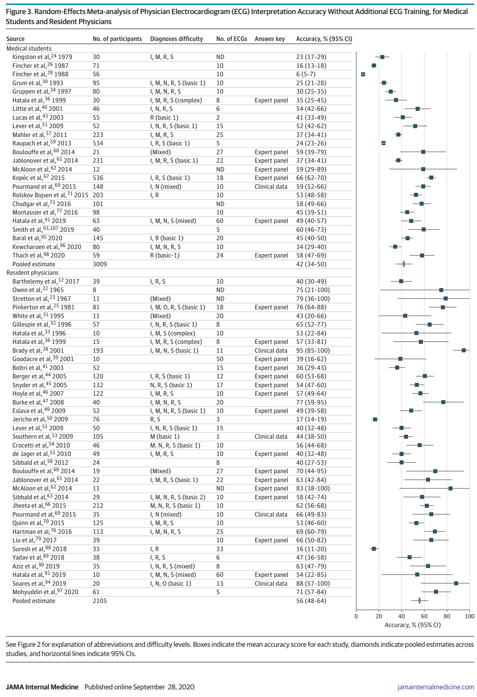
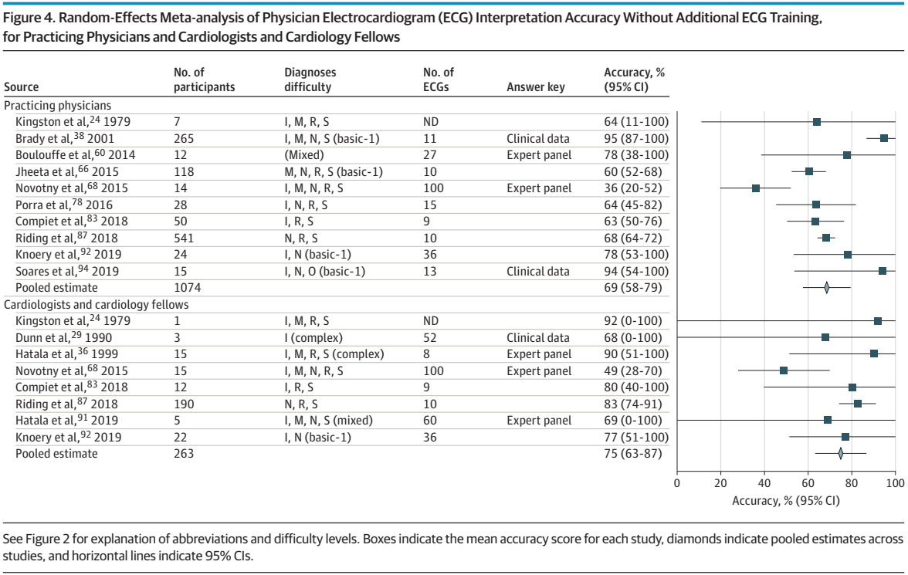
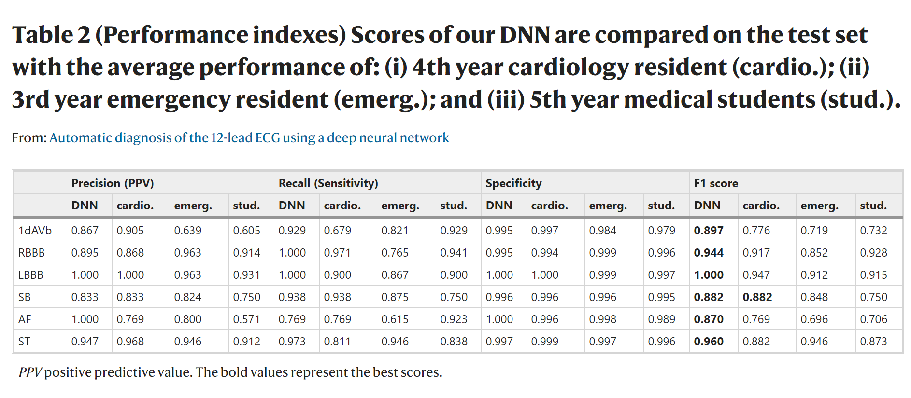

ECG Interpretations: Accuracy, Alternative, and Advance
In a systematic review and meta-analysis of 78 studies that assessed the accuracy of
physicians’ or medical students’ ECG interpretations in a test setting, the accuracy
varied widely, ranging from 4% to 95%.

ECG Interpretations Accuracy for Medical Students and Residents.
The
median accuracy across all training levels was relatively low (54%),
and scores increased as expected with progressive training and specialization; as follow:
- Cardiologists and Cardiology Fellows: 75%
- Practicing Physicians: 69%
- Residents: 56%
- Medical Students: 42%

ECG Interpretations Accuracy for Practicing Physicians and Cardiologists.
Automatic diagnosis of the 12-lead ECG using a deep neural network.
Deep Neural Networks (DNNs) are models composed of stacked transformations that learn tasks by examples.
In this trial, the investigators trained DNN model in a dataset of more than 2 millions ECGs
The DNN model was then tested employing 827 ECG tracings.

The DNN outperform cardiology resident in recognizing
6 types of abnormalities in 12-lead ECG recordings, with F1 scores above 80%
and specificity over 99%.